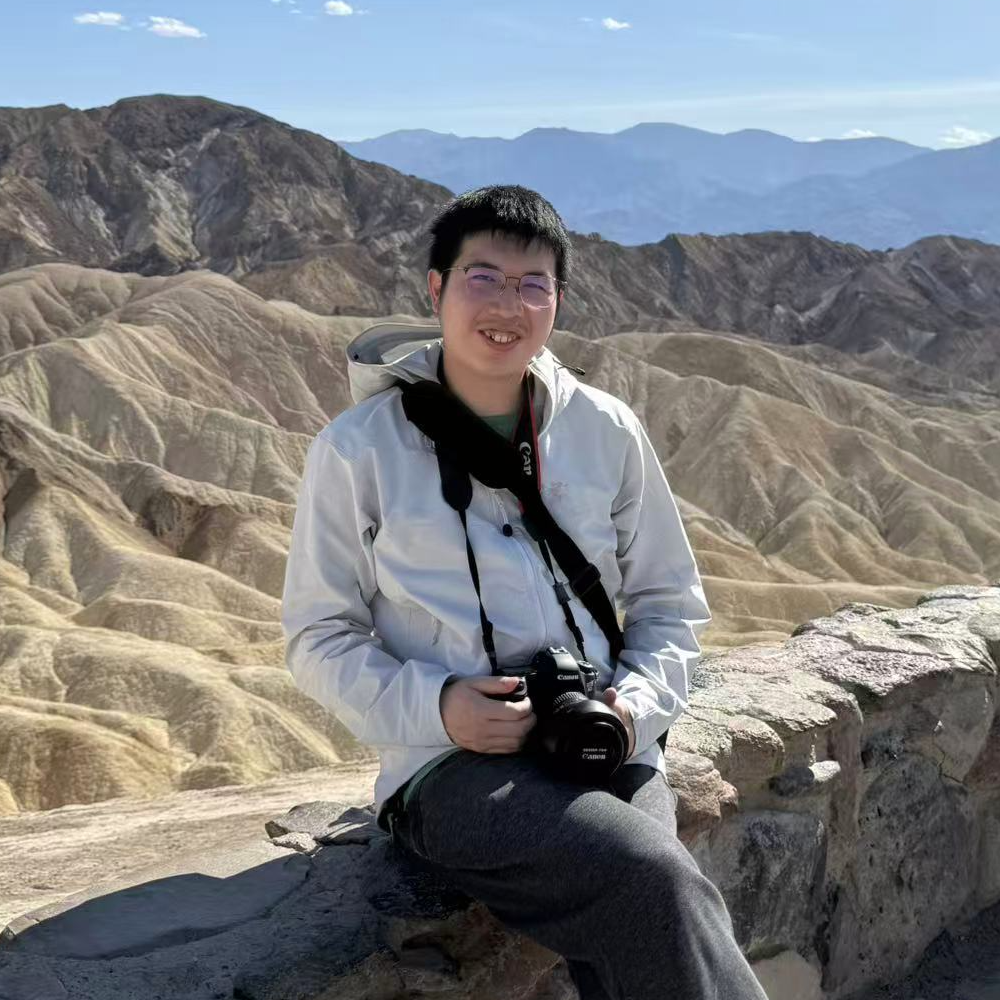
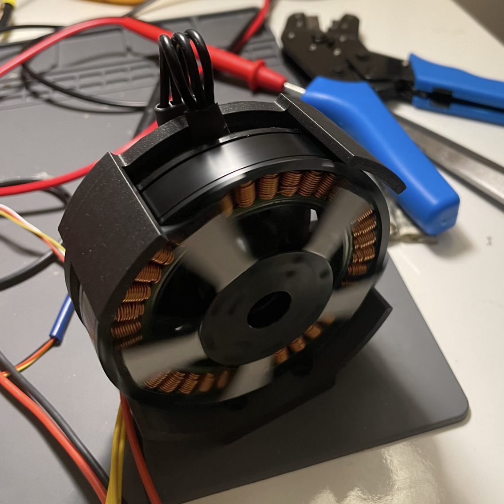
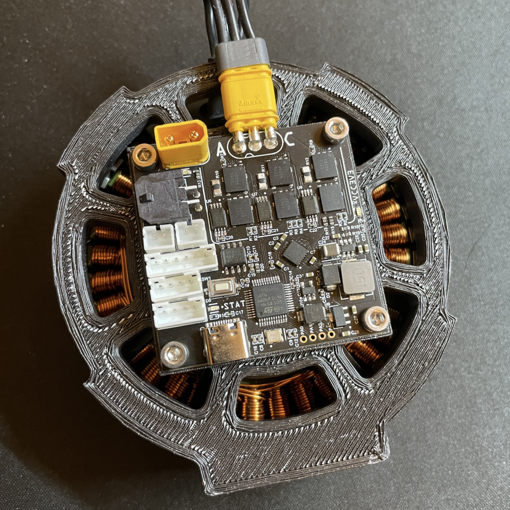

|
Yuchen Zhang I am a Ph.D. student in Robotics at Carnegie Mellon University, advised by Dr. Wenshan Wang. My research focuses on building generalizable and efficient perception systems for robotics. Previously, I worked on correspondence prediction, visual odometry, and reinforcement learning for quadrupedal locomotion. I earned my M.S. in Robotics at CMU and my B.S. in Electrical Engineering at UC San Diego. I also spent 7 years competing in the FIRST Robotics Competition (FRC) and FIRST Tech Challenge (FTC). |
 |
ResearchI am interested in perception and hardware integration for general-purpose robots. Most of my papers focus on perception foundation models. Some papers are highlighted. |

{kind=link}
Projects |
|


|
FOC Motor Controller
A single channel Field-Oriented Control (FOC) motor controller based on STM32. Achieved 1kHz current loop. |

|
Hand-held Gimbal
A 3-channel FOC controller that stabilizes the phone based on IMU readings. |
|
This website is based on template at here. |